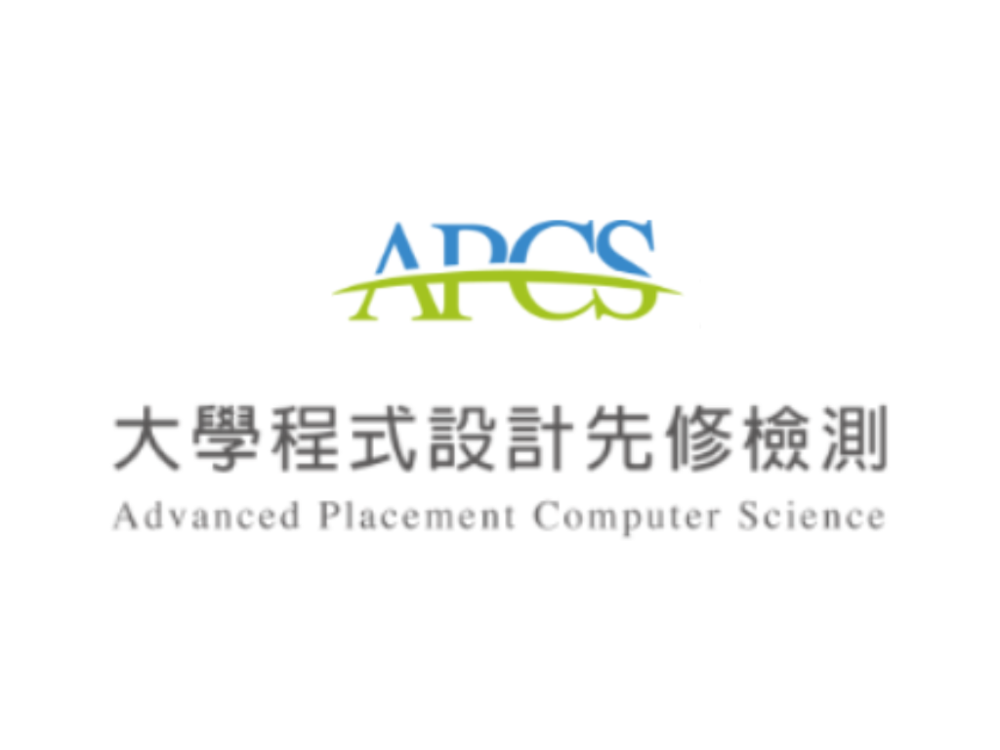
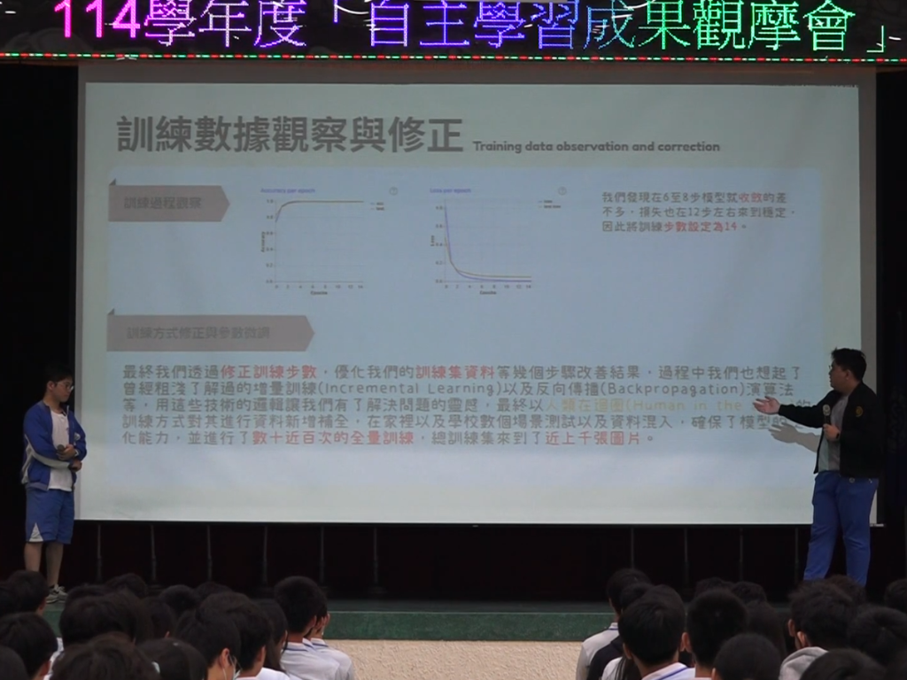
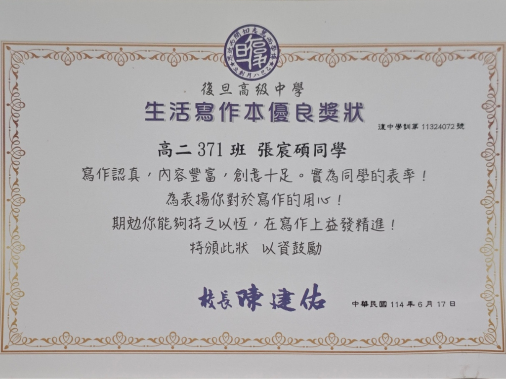
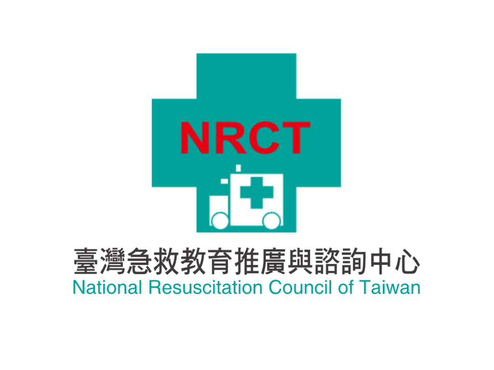

關於我
哈柔！我是Irukatun
iruka是日文的海豚而tun是中文的海豚，所以，你也可以叫我豚豚！
國中開始研究硬體、13歲那年自己從配單到組裝了人生第一台電腦，開啟了我的開發之路，高中因緣際會接觸到校內的Arduino課程而開始步入嵌入式的領域，然後越走越深——網頁、開發板、AI等等...各種有興趣的東東都碰了一輪。
我喜歡把東西從零搭建起來——從最底層的韌體一路寫到最頂層瀏覽器的前端，再用伺服器或雲計算平台把它部署起來。比起用框架組積木，我更想知道底層發生了什麼！
// Build it. Break it. Understand it.
技能
// 豚豚的技術棧簡覽
證照




作品
從零獨立建立個人品牌網站，原先網域是自己的一站式服務入口，後來新增各種功能如暗色模式、版本管理。持續迭代超過半年，後來進行了全面重新規劃，將主站打造成自己的個人介紹網頁（即此站）。
高中自主學習跨學期專題。以 ESP32-S3 為核心，整合觸控螢幕、PIR 感測、動態感測、麥克風、喇叭、RTC、SD 卡等多項零件，期望開發可常駐書桌的智慧互動裝置。目前的進度為完成大部分硬體的驅動，實際互動功能正在加緊開發中。
高中自主學習專題的子功能。基於Google Teachable Machine 的圖像動作辨識，為解決智慧小助理中動作紀錄的需求，嘗試多種方案後選定訓練圖像分類模型，該實作後續登上校內自主學習動態展，並且授權學校行政老師們帶去與對岸復旦中學作為自主學習案例交流。
Minecraft 伺服器幾乎可以說是我的 SRE（可靠性工程）的啟蒙教材，從喜歡和朋友一起玩，直到開始研究伺服器，近而累積了大量的的網路知識還有各式各樣的運維經驗。